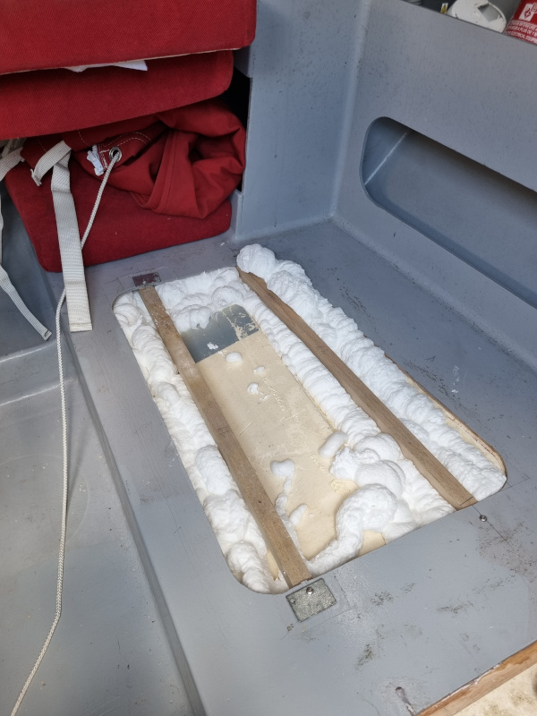

<div class="boat-card">
    <div style="min-height: 400px; overflow-y: scroll;">
        <div class="tab" style="margin-top: 30px; margin-bottom: 10px; display: grid; grid-template-columns: auto auto auto auto auto auto auto auto auto auto auto;"> <!-- TODO Improve the grid-template... -->
            <button class="tablinks tab-active" onclick="openTab(event, 'zephir-01');" title="Sommaire">Sommaire</button>
            <button class="tablinks" onclick="openTab(event, 'zephir-02');" title="D&eacute;tails">D&eacute;tails</button>
            <button class="tablinks" onclick="openTab(event, 'zephir-03');" title="Actualit&eacute;s">Actualit&eacute;s</button>
        </div>
    
        <div style="min-height: 300px; max-height: 450px; overflow-y: scroll;">
            <div id="zephir-01" class="tab-section" style="display: block;">
                <div style="display: grid; grid-template-columns: 50% 50%;">
                    
                    <div style="padding: 14px;">
                        <h2>Zephir</h2>
                        Birvidic 700 bas&eacute; &agrave; Kern&eacute;vel<br/>
                    </div>
                </div>
                <div>
                    <h2>Plus d'infos...</h2>
                    R&eacute;f&eacute;rent : Olivier.<br/>
                    <!--
                    T&eacute;l : . . .<br/>
                    Email : . . . -->
                </div>
            </div>
            <div id="zephir-02" class="tab-section" style="display: none;">
                <div style="display: grid;">    
                    <p style="line-height: 1.2em; margin-top: 10px;">
                        Zephir est un <a href="https://www.fr-lucas.com/birvidic-700-1701" target="FL">Birvidic 700</a>, dessin&eacute; par Fran&ccedil;ois Lucas.
                    </p>
                </div>
            </div>
            <div id="zephir-03" class="tab-section" style="display: none; line-height: 1.0em;">
                <h2>Reprise en main</h2>
                <span>Apr&egrave;s quelques mois sur sa remorque, Zephir reprend du service</span>
                <br/>
                <p style="text-align: left; margin-top: 10px;">
                    
                    <br/>
                    
                    <br/>
                    Apr&egrave;s ces mois sur le terre-plein, et le capot de descente qui n'est pas compl&egrave;tement &eacute;tanche, 
                    il y a de l'eau &agrave; l'int&eacute;rieur du bateau...<br/>
                    En tout cas, la coque ne fuit pas !<br/>
                    
                    <br/>
                </p>
                <h2>Reprise des caissons de flottabilit&eacute;</h2>
                <span>De curieuses modifications ont d&ucirc; &ecirc;tre op&eacute;r&eacute;es...</span>
                <p style="text-align: left; margin-top: 10px;">
                    
                    <br/>
                    
                    <br/>
                    
                    <br/>
                    
                    <br/>
                </p>
                <h2>Mise hors d'eau du r&eacute;gulateur</h2>
                <span>
                    Le r&eacute;gulateur &eacute;tait au niveau de la batterie, les connexions trempaient dans l'eau,
                    la batterie &eacute;tait morte.
                </span>
                <p style="text-align: left; margin-top: 10px;">
                    
                    <br/>
                    
                    <br/>
                    D&eacute;plac&eacute; du c&ocirc;t&eacute; de la couchette, plus de probl&egrave;me, les connexions sont hors d'eau.
                </p>

                <h2><a href="https://olivierld.github.io/web.stuff/boat.stuff/rubiscup.2024/rubiscup.2024.html" target="OlivierLD">Zephir va &agrave; la Rubi's Cup</a> &agrave; Groix (28-30 juin 2024)</h2>
                <p>
                    Au retour de la Rubi's Cup, Zephir a un dock au port du Kern&eacute;vel, <b>K88</b>.
                </p>

            </div>
        </div>
    </div>
</div>
